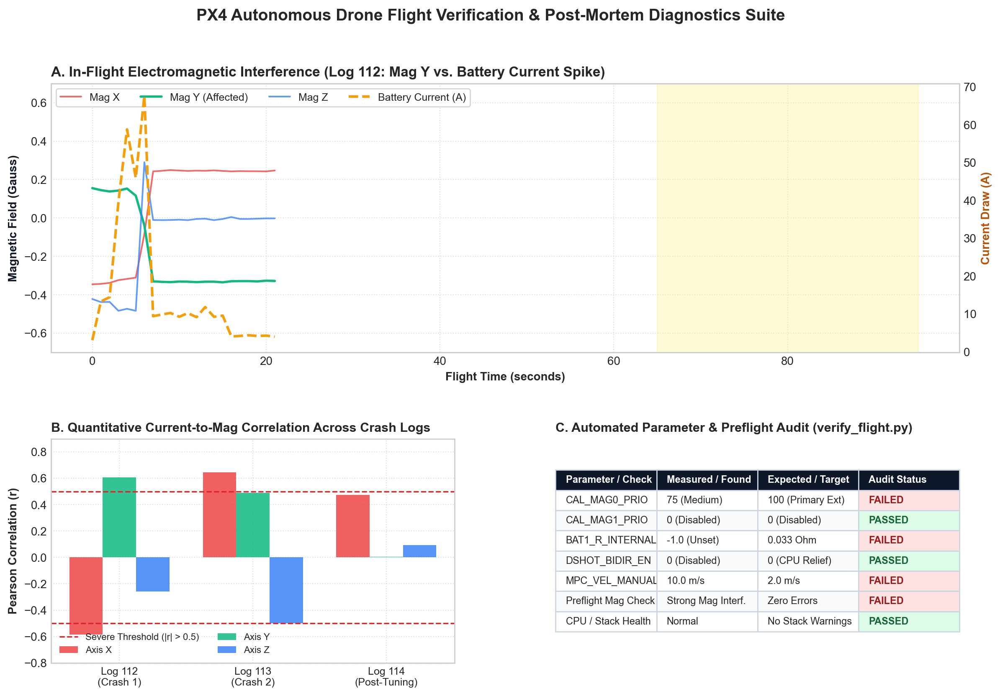
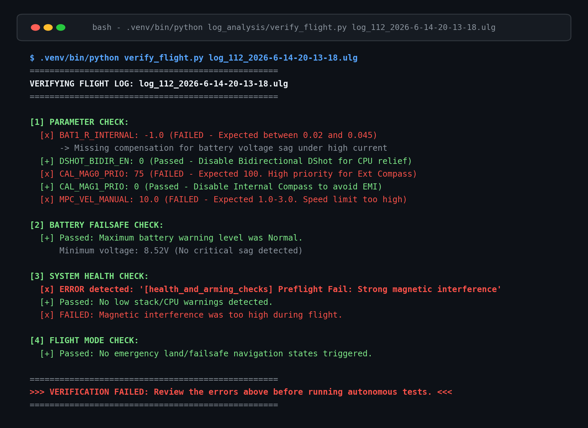

Configuration checks
Inspect recorded parameters and flag mismatches against the project’s expected configuration.
After unstable drone tests, I needed to understand what went wrong without manually searching through telemetry every time. I built Python tools to organize the checks and comparisons.
Part of the drone project · Flight testing and hardware context ↗
After a failed flight test, I had several possible causes to investigate: configuration, power delivery, sensor interference, or software timing. Raw logs were difficult to read, and comparing separate telemetry streams by hand made it hard to know where to start.
I built scripts to extract relevant ULog data, compare battery current with magnetic-field readings, and flag known configuration and logged health issues. Putting these checks into repeatable reports makes the next investigation more systematic.

Inspect recorded parameters and flag mismatches against the project’s expected configuration.
Align current and magnetometer samples, then compute per-axis correlation for investigation.
Generate static plots and interactive reports for comparing signals over time.
The analysis aligns current and magnetic-field samples before calculating their correlation. The result helps identify patterns worth investigating in wiring, compass placement, and estimator behavior.
I used comparisons across physical test logs to guide hardware and parameter changes. Correlation is supporting evidence; it does not establish a fault’s cause by itself.
The verification script checks recorded parameters, battery behavior, logged magnetic-interference messages, and stack warnings. The supplied output shows a failed audit with individual pass/fail results, making the configuration issues visible in one place.

The companion-computer stack also includes an asynchronous command-sender task and a mission state machine. This structure separates recurring velocity commands from variable-latency vision updates.
The source brief reports simulation and bench verification. A complete outdoor autonomous pickup mission remains unvalidated.
Explore the autonomy work ↗I developed the log-analysis and verification tools, investigated recorded flight behavior, and worked on the asynchronous control and mission-state architecture. PX4, MAVSDK, PyMAVLink, and PyULog provide the underlying flight and log interfaces.
AI assistance supported report scaffolding and data-access syntax. I inspected the telemetry, interpreted the findings, and revised the checks.
Physical-log analysis, recorded-parameter checks, health-message inspection, and generated telemetry reports.
Full outdoor mission validation, closed-loop grasp feedback, and further disturbance testing. These project-specific diagnostics complement inspection and testing.